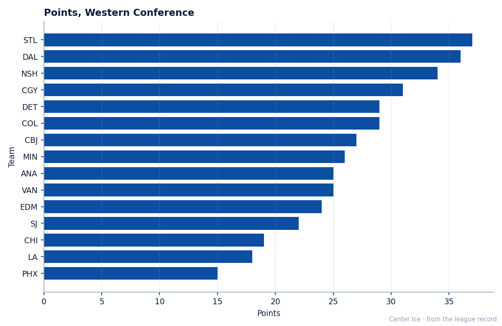
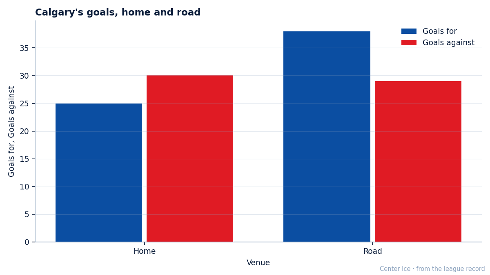
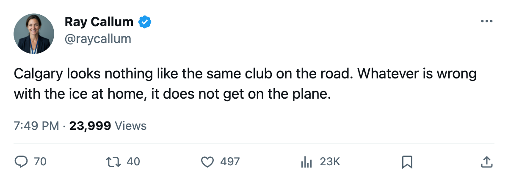
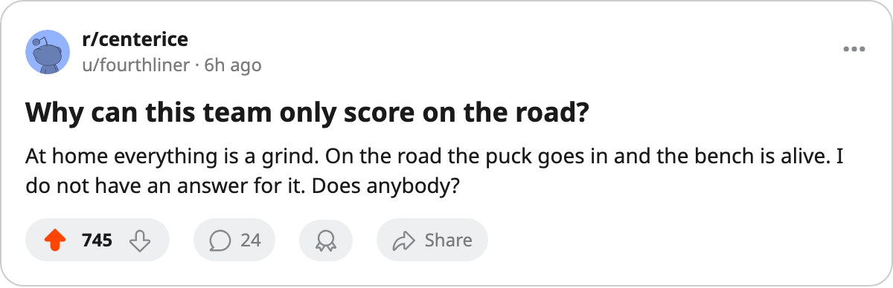

DET
DET VAN
VANThe Road Flames: 38 Goals Away, 25 at Home, and a 4-Game Streak
Calgary has 31 points and fourth place in the West, and almost all of the offense has come away from its own rink.
 Ray CallumSenior correspondent · Home Ice Network
Ray CallumSenior correspondent · Home Ice Network
The  Calgary Flames carry a four-game win streak into Monday's home game against
Calgary Flames carry a four-game win streak into Monday's home game against  Minnesota Wild, and they have scored 38 goals in 13 road games against 25 in 12 at home.
Minnesota Wild, and they have scored 38 goals in 13 road games against 25 in 12 at home.
Calgary has 31 points in 25 games, fourth in the West, and yet it is 5-7 in its own building and 10-3 away from it. St. Louis leads the conference on 37 points and Dallas has 36, so the Flames are not chasing a runaway. They are chasing the version of themselves that shows up on the bus.

The goals explain the record. In 12 home games the Flames have scored 25 and given up 30. In 13 road games they have scored 38 and given up 29. The defense travels almost unchanged. The offense does not travel at all.

The streak is recent and it is real: four straight wins, with 24 goals for and 18 against across the last ten games. It includes a 1-0 win at Detroit on 2005-12-01, Calgary's third win in three meetings with the Red Wings this season. All three were one-goal games, 8-5 on the aggregate.
The goaltending has been a two-man arrangement.  Roman Turek79 has started 19 of the 25 games, 76% of the load, and sits at 10-9.
Roman Turek79 has started 19 of the 25 games, 76% of the load, and sits at 10-9.  Jamie McLennan74 has 6 games and is 5-1. Dany Sabourin70 came out of the rotation this week, so the split is down to two.
Jamie McLennan74 has 6 games and is 5-1. Dany Sabourin70 came out of the rotation this week, so the split is down to two.
 Toni Lydman70 is out with a foot injury and is not due back until 2006-01-26, which leaves the coach one fewer body on a defense that has allowed 59 goals in 25 games.
Toni Lydman70 is out with a foot injury and is not due back until 2006-01-26, which leaves the coach one fewer body on a defense that has allowed 59 goals in 25 games.
Minnesota comes in on a two-game win streak with 26 points. Calgary won the first meeting 4-3 in overtime, and the Wild have not lost to the Flames in regulation this season. After Monday the Flames go back on the road at Vancouver on 2005-12-09, which by this season's pattern is good news.

